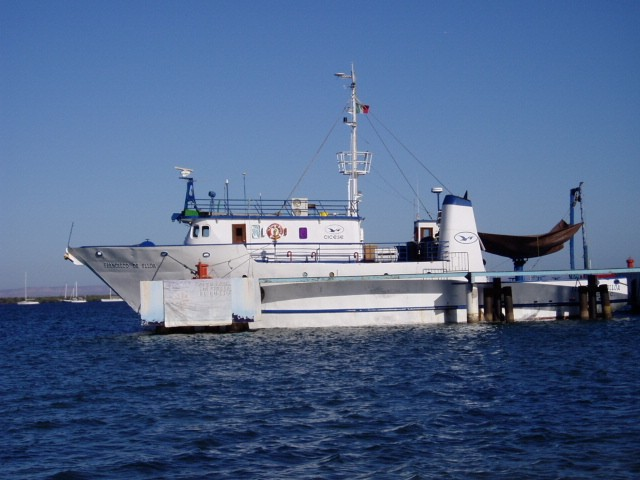
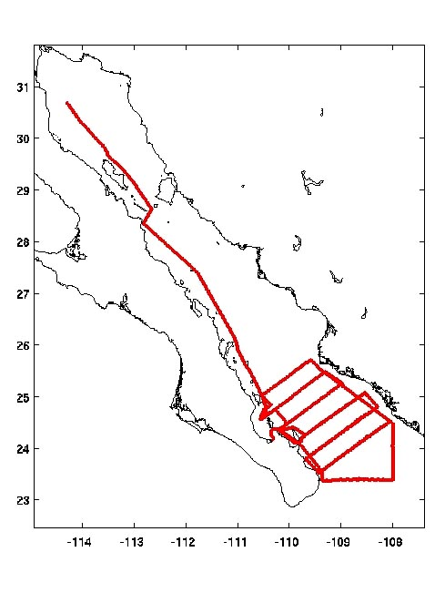
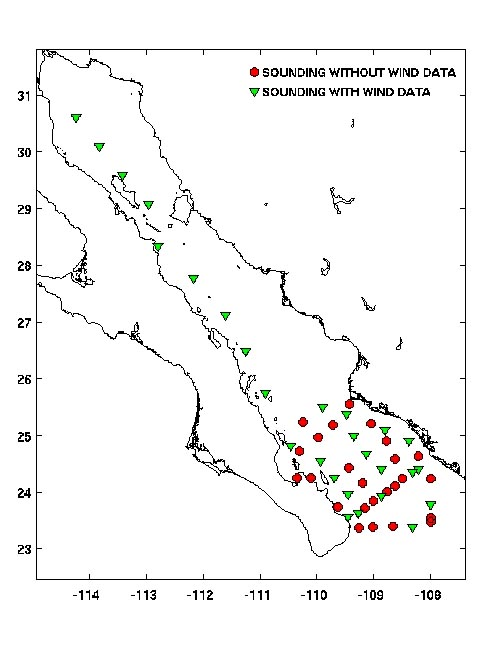
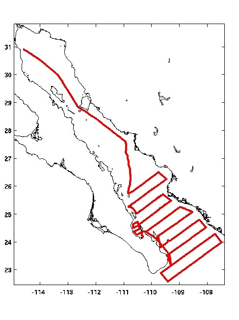
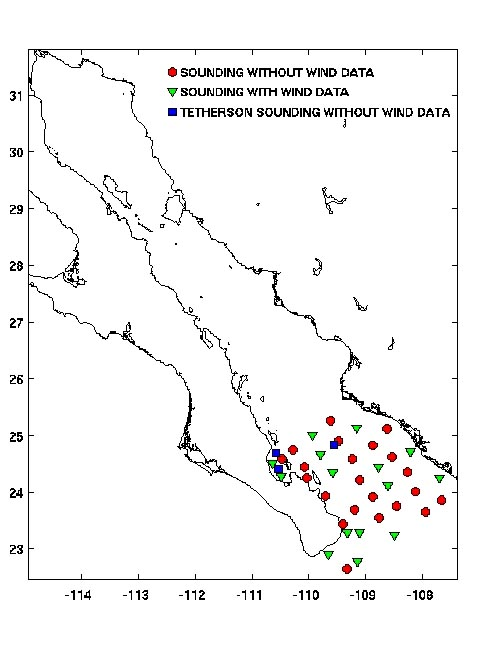

This is one of the upper air data sets developed for the North American Monsoon Experiment (NAME). This data set includes the high vertical resolution (2 second) rawinsonde data from the Centro de Investigación Científica y de Educatció Superior de Ensenada (CICESE) Research Vessel (R/V) Francisco de Ulloa (see figures 1 and 2). During NAME the R/V Francisco de Ulloa conducted two cruises (5-21 June and 6-16 August 2004) through the Gulf of California (see figures 3-6). Soundings were typically released four times per day.
More information about the R/V Francisco de Ulloa can be found at http://oceanografia.cicese.mx/fcoulloa/
The R/V Ulloa utilized two different types of radiosondes during NAME.
1. RS-80G - fresh radiosondes that measured temperature, pressure, humidity and winds. They expected small biases in pressure and humidity (3%) with these radiosondes. These soundings were most often released at the 0000 and 1200 UTC release times.
2. RS-80N - older radiosondes that measured temperature, pressure and humidity (these soundings do not include wind measurements). They expected larger biases with these radiosondes. These soundings were most often released at the 0600 and 1800 UTC release times.

Figure 2. The R/V Francisco de Ulloa
|  |  |
| Figure 3. Cruise 1 (5 - 21 June 2004) track. | Figure 4. Radiosonde release locations for Cruise 1. |
|  |  |
| Figure 5. Cruise 2 (August 6 - 16 2004) track. | Figure 6. Radiosonde release locations for Cruise 2. |
All upper air soundings were converted to University Corporation for Atmospheric Research/Joint Office for Science Support (UCAR/JOSS) Cross Chain LORAN Atmospheric Sounding System (CLASS) Format (JCF). JCF is a version of the National Center for Atmospheric Research (NCAR) CLASS format and is an ASCII format consisting of 15 header records for each sounding followed by the data records with associated QC information.
The header records (15 total records) contain data type, project ID, site ID, site location, release time, sonde type, meteorological and wind data processors, and the operator's name and comments. The first five header lines contain information identifying the sounding, and have a rigidly defined form. The following 7 header lines are used for auxiliary information and comments about the sounding, and may vary from dataset to dataset. The last 3 header records contain header information for the data columns. Line 13 holds the field names, line 14 the field units, and line 15 contains dashes ('-' characters) delineating the extent of the field.
The five standard header lines are as follows:
| Line | Label (padded to 35 char) | Contents |
|---|---|---|
| 1 | Data Type: | Description of type and resolution of data. |
| 2 | Project ID: | Id of weather project. |
| 3 | Release Site Type/Site ID: | Description of the release site. |
| 4 | Release Location (lon,lat,alt): | Position of release site in the format described below. |
| 5 | UTC Release Time (y,m,d,h,m,s): | Time of release, in the format: yyyy, mm, dd, hh:mm:ss |
The release location is given as: lon (deg min), lat (deg min), lon (dec. deg), lat (dec. deg), alt (m)
Longitude in deg min is in the format: ddd mm.mm'W where ddd is the number of degrees from True North (with leading zeros if necessary), mm.mm is the decimal number of minutes, and W represents W or E for west or east longitude, respectively. Latitude has the same format as longitude, except there are only two digits for degrees and N or S for north/south latitude. The decimal equivalent of longitude and latitude and station elevation follow.
The seven non-standard header lines may contain any label and contents. The labels are padded to 35 characters to match the standard header lines. Records for this dataset include the following three non-standard header lines.
| Line | Label (padded to 35 char) | Contents |
|---|---|---|
| 6 | Radiosonde Serial Number: | 028350643 |
| 7 | Wind Finding Methodology: | GPS |
| 12 | Nominal Release Time (y,m,d,h,m,s): | Nominal time of release, in the format: yyyy, mm, dd, hh:mm:ss |
The data records each contain time from release, pressure, temperature, dew point, relative humidity, U and V wind components, wind speed and direction, ascent rate, balloon position data, altitude, and quality control flags (see the QC code description). Each data line contains 21 fields, separated by spaces, with a total width of 130 characters. The data are right-justified within the fields. All fields have one decimal place of precision, with the exception of latitude and longitude, which have three decimal places of precision. The contents and sizes of the 21 fields that appear in each data record are as follows:
| Field No. | Width | Format | Parameter | Units | Missing Value |
|---|---|---|---|---|---|
| 1 | 6 | F6.1 | Time | Seconds | 9999.0 |
| 2 | 6 | F6.1 | Pressure | Millibars | 9999.0 |
| 3 | 5 | F5.1 | Dry-bulb Temperature | Degrees C | 999.0 |
| 4 | 5 | F5.1 | Dew Point Temperature | Degrees C | 999.0 |
| 5 | 5 | F5.1 | Relative Humidity | Percent | 999.0 |
| 6 | 6 | F6.1 | U Wind Component | Meters / Second | 9999.0 |
| 7 | 6 | F6.1 | V Wind Component | Meters / Second | 9999.0 |
| 8 | 5 | F5.1 | Wind Speed | Meters / Second | 999.0 |
| 9 | 5 | F5.1 | Wind Direction | Degrees | 999.0 |
| 10 | 5 | F5.1 | Ascent Rate | Meters / Second | 999.0 |
| 11 | 8 | F8.3 | Longitude | Degrees | 9999.0 |
| 12 | 7 | F7.3 | Latitude | Degrees | 999.0 |
| 13 | 5 | F5.1 | Elevation Angle | Degrees | 999.0 |
| 14 | 5 | F5.1 | Azimuth Angle | Degrees | 999.0 |
| 15 | 7 | F7.1 | Altitude | Meters | 99999.0 |
| 16 | 4 | F4.1 | QC for Pressure | Code (see below) | 99.0 |
| 17 | 4 | F4.1 | QC for Temperature | Code (see below) | 99.0 |
| 18 | 4 | F4.1 | QC for Humidity | Code (see below) | 99.0 |
| 19 | 4 | F4.1 | QC for U Wind Component | Code (see below) | 99.0 |
| 20 | 4 | F4.1 | QC for V Wind Component | Code (see below) | 99.0 |
| 21 | 4 | F4.1 | QC for Ascension Rate | Code (see below) | 99.0 |
Fields 16 through 21 contain the Quality Control information derived at the UCAR Joint Office for Science Support (UCAR/JOSS). Any QC information from the original sounding is replaced by the following JOSS codes:
| Code | Description |
|---|---|
| 99.0 | Unchecked (QC information is "missing.") ("UNCHECKED") |
| 1.0 | Checked, datum seems physically reasonable. ("GOOD") |
| 2.0 | Checked, datum seems questionable on physical basis. ("MAYBE") |
| 3.0 | Checked, datum seems to be in error. ("BAD") |
| 4.0 | Checked, datum is interpolated. ("ESTIMATED") |
| 9.0 | Checked, datum was missing in original file. ("MISSING") |
The following is a sample record of Francisco de Ulloa NAME high resolution rawinsonde data in JOSS CLASS format. The data portion is much longer than 80 characters and, therefore, wraps around to a second line. See section 2.1 for an exact format specification
Data Type: CICESE Sounding Project ID: NAME Release Site Type/Site ID: MRS NPS Ship Francisco de Ulloa Release Location (lon,lat,alt): 110 20.40'W, 24 15.00'N, -110.340, 24.250, 1.0 UTC Release Time (y,m,d,h,m,s): 2004, 06, 05, 02:25:00 Radiosonde Serial Number: 028350643 Wind Finding Methodology: GPS / / / / Nominal Release Time (y,m,d,h,m,s):2004, 06, 05 03:00:00 Time Press Temp Dewpt RH Ucmp Vcmp spd dir Wcmp Lon Lat Ele Azi Alt Qp Qt Qrh Qu Qv QdZ sec mb C C % m/s m/s m/s deg m/s deg deg deg deg m code code code code code code ------ ------ ----- ----- ----- ------ ------ ----- ----- ----- -------- ------- ----- ----- ------- ---- ---- ---- ---- ---- ---- 0.0 1010.8 26.7 21.5 73.0 1.0 5.6 5.7 190.0 999.0 -110.340 24.250 999.0 999.0 1.0 99.0 99.0 99.0 99.0 99.0 9.0 2.0 1007.8 27.9 20.0 62.0 9999.0 9999.0 999.0 999.0 13.0 9999.000 999.000 999.0 999.0 27.0 2.0 99.0 99.0 9.0 9.0 99.0 4.0 1007.3 27.9 18.9 58.0 9999.0 9999.0 999.0 999.0 7.5 9999.000 999.000 999.0 999.0 31.0 99.0 99.0 99.0 9.0 9.0 99.0 6.0 1005.1 29.1 17.4 49.0 9999.0 9999.0 999.0 999.0 8.2 9999.000 999.000 999.0 999.0 50.0 99.0 99.0 99.0 9.0 9.0 99.0 8.0 1004.1 29.6 17.2 47.0 9999.0 9999.0 999.0 999.0 7.2 9999.000 999.000 999.0 999.0 59.0 99.0 99.0 99.0 9.0 9.0 99.0 10.0 1002.9 29.9 16.8 45.0 9999.0 9999.0 999.0 999.0 6.9 9999.000 999.000 999.0 999.0 70.0 99.0 99.0 99.0 9.0 9.0 99.0
| ID | SITE | COUNTRY | LONG | LAT | ELEV (m) |
|---|---|---|---|---|---|
| MRS | NPS Ship Francisco de Ulloa | MX | 9999.0 | 999.0 | 99999.0 |
This dataset underwent an automated QC process. The dataset underwent internal consistency checks which included two types of checks, gross limit checks on all parameters and rate-of-change checks on temperature, pressure and ascension rate. Some further information on the QC processing conducted by JOSS can be found in Loehrer et al. (1996) and Loehrer et al. (1998).
These checks were conducted on each sounding and data were automatically flagged as appropriate. Only the data point under examination was flagged. JOSS conducted the following gross limit checks on the NAME R/V Ulloa sounding dataset. In the table P = pressure, T = temperature, RH = relative humidity, U = U wind component, V = V wind component, B = bad, and Q = questionable.
| Parameter | Gross Limit Check | Parameter(s) Flagged | Flag Applied |
|---|---|---|---|
| Pressure | < 0 mb or > 1050 mb | P | B |
| Altitude | < 0 m or > 40000 m | P, T, RH | Q |
| Temperature | < -90 °C or > 45 °C | T | T |
| Dew Point | < -99.9 °C or > 33 °C > Temperature |
RH T, RH | Q Q |
| Relative Humidity | < 0% or > 100% | RH | B |
| Wind Speed | < 0 m/s or > 100 m/s > 150 m/s |
U, V U, V | Q B |
| U Wind Component | < 0 m/s or > 100 m/s > 150 m/s |
U U | Q B |
| V Wind Component | < 0 m/s or > 100 m/s > 150 m/s |
V V | Q B |
| Wind Direction | < 0° or > 360° | U, V | B |
| Ascent Rate | < -10 m/s or > 10 m/s | P, T, RH | Q |
These checks were conducted on each sounding and data were automatically flagged as appropriate. These checks were started at the lowest level of the sounding and compared neighboring 2-sec data points. In the case of checks ensuring that the values increased/decreased as expected, only the data point under examination was flagged. However, for the other checks, all of the data points used in the examination were flagged. All items within the table are as previously defined.
| Parameter | Vertical Consitency Check | Parameter(s) Flagged | Flag Applied |
|---|---|---|---|
| Time | decreasing / equal | None | None |
| Altitude | decreasing / equal | P, T, RH | Q |
| Pressure | increasing / equal > 1 mb/s or < -1 mb/s > 2 mb/s or < -2 mb/s |
P, T, RH P, T, RH P, T, RH | Q Q B |
| Temperature | < -15 °C/km < -30 °C/km > 50 °C/km (not applied at p < 250 mb) >100 °C/km (not applied at p < 250 mb) |
P, T, RH P, T, RH P, T, RH P, T, RH |
Q B Q B |
| Ascent Rate | change of > 3 m/s or & lt; -3 m/s change of > 5 m/s or < -5 m/s |
P P | Q B |
The older Vaisala RS80-N radiosondes (typically released at the 0600 and 1800 UTC release times) have a substantial dry bias in the measured humidity values evident in the data. The raw data set included over 16000 negative relative humidity values. These have been set to missing in this processed data set. No corrections have been applied to these data.
Loehrer, S. M., T. A. Edmands, and J. A. Moore, 1996: TOGA COARE upper-air sounding data archive: development and quality control procedures. Bull. Amer. Meteor. Soc., 77, 2651-2671.
Loehrer, S. M., S. F. Williams, and J. A. Moore, 1998: Results from UCAR/JOSS quality control of atmospheric soundings from field projects. Preprints, Tenth Symposium on Meteorological Observations and Instrumentation, Phoenix, AZ, Amer. Meteor. Soc., 1-6.